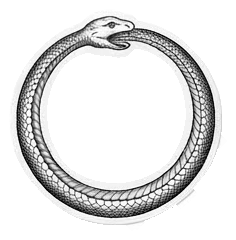

09 / 09 · Take it with you

This site, read through its own three circles
- Product · r = 1
- A lecture and a usable canvas
- Yours: {{answers.product}}
- Experience · r = 2
- The journey you just took
- Yours: {{answers.experience}}
- World · r = 3
- What you do with it next
- Yours: {{answers.world}}
Vibe-coded by someone without “engineer” in her title. The judgment was hers; the typing was shared.